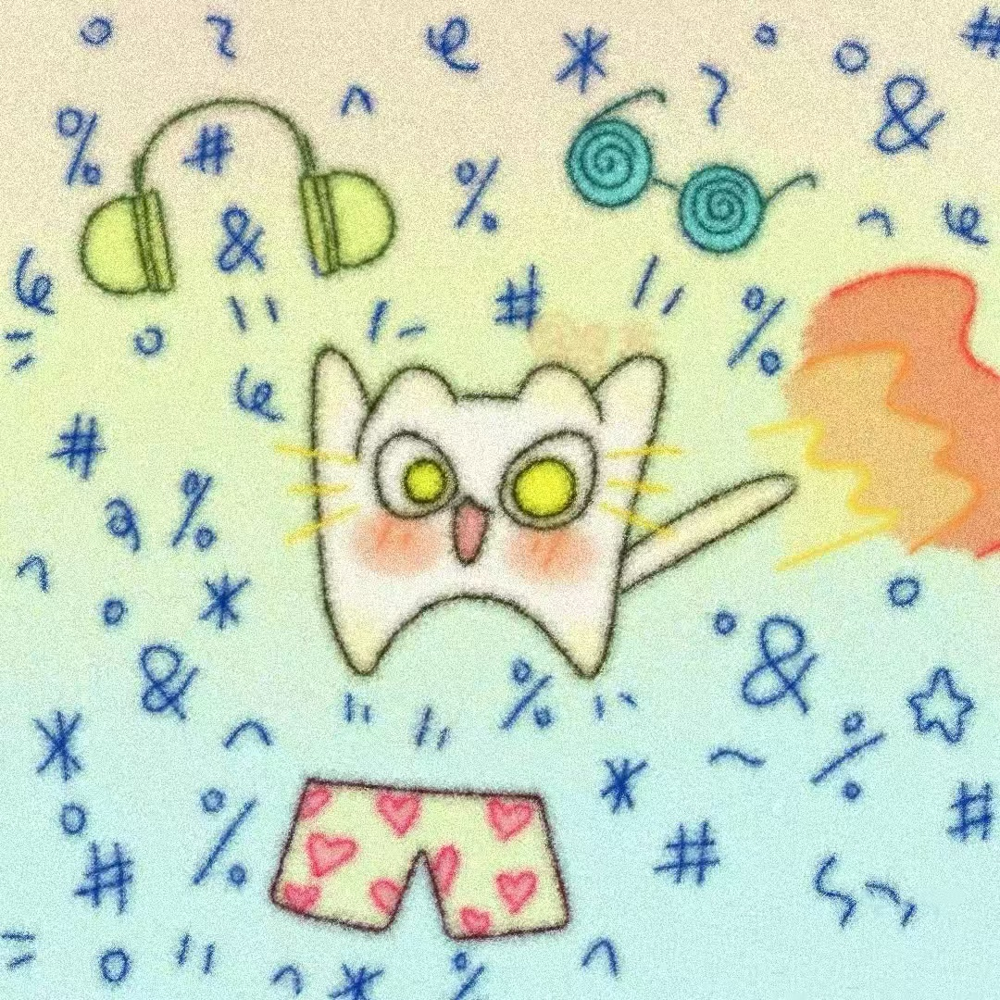

大家好，我叫蔡昱辰，来自电子科技大学信息与软件工程学院。生活中，我喜欢健身，对多种球类均有涉猎，如橄榄球、棒球、羽毛球等。我也热爱书法、舞蹈。
在闲暇时间，我喜欢看看书（bushi），尤其喜欢冯至的《山水》与白先勇的《树犹如此》。
请欣赏萌萌的三小只宝宝
其实我暑假就已经知道微光了hhhhh 当时还不知道工作室是什么，只感觉很厉害。一开始也没想着要写招新题（没有基础，悲），但是后来鼓起勇气点开了招新网址，于是就开始了html的漫漫征途
想要加入微光是因为感觉招新群的氛围特别好，有种松弛的感觉。虽然还是不敢在群里发言，但还是很向往能够融入这个群聊ꉂ ･ ･ ☆一方面是我对于网页设计这些比较感兴趣，喜欢雕饰细节，像配色、插图、字体选择这些。
另一方面是因为前端比较好上手，对新手比较友好，html对于我这种小菜鸟的容错率比较高。在学习的后期发展的上限也很高，可以学会很多很多东西！
24/10/2024
分享一个我很喜欢的网课老师（bushi）
如果浏览器不支持，可点击此链接进行观看